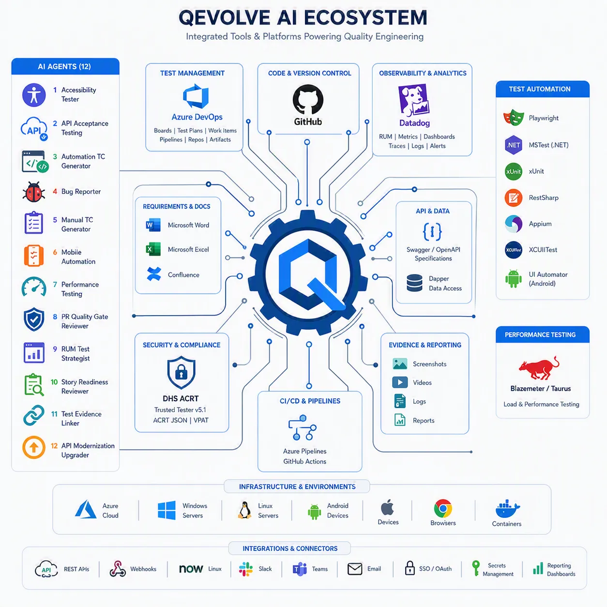
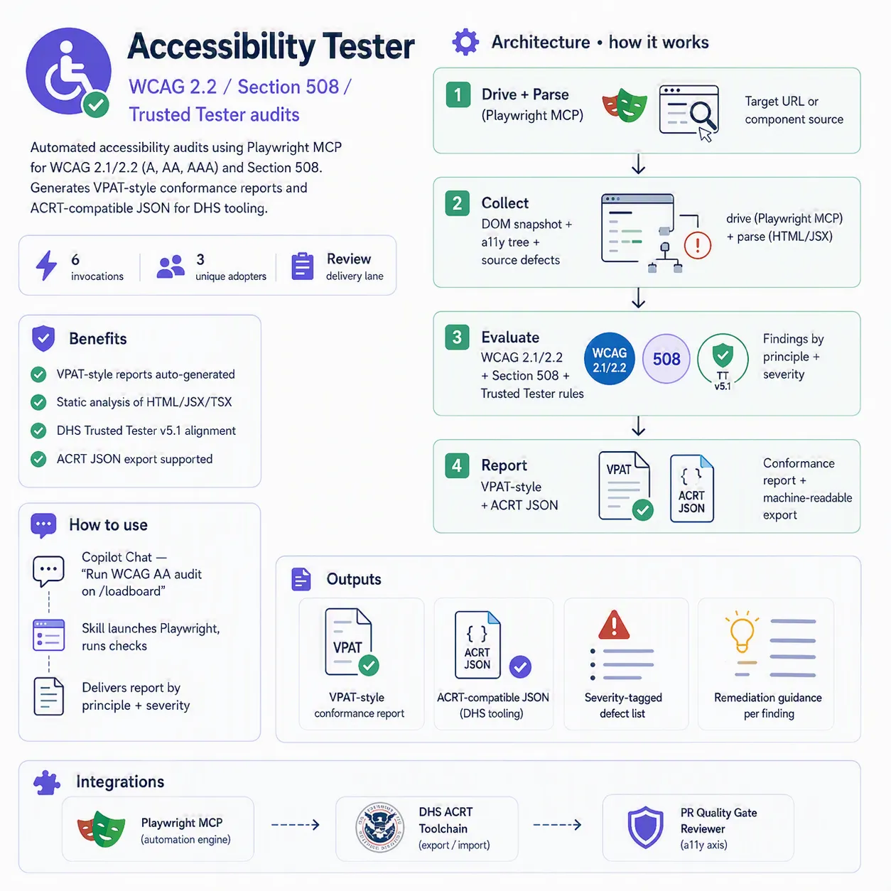
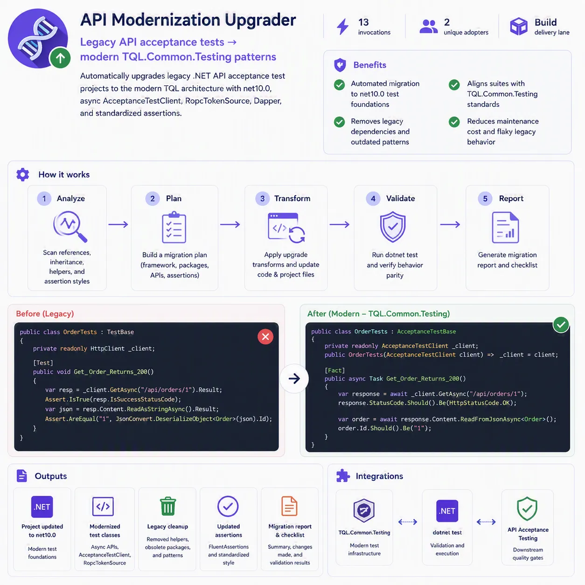
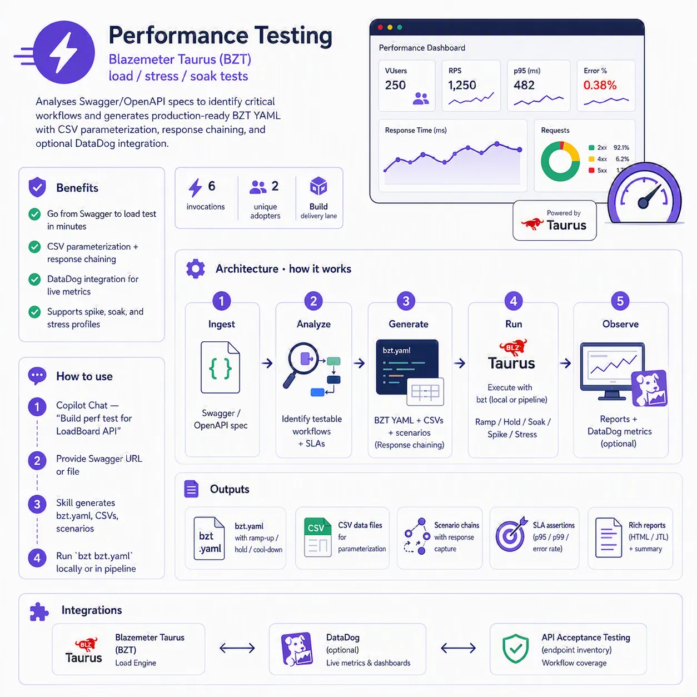
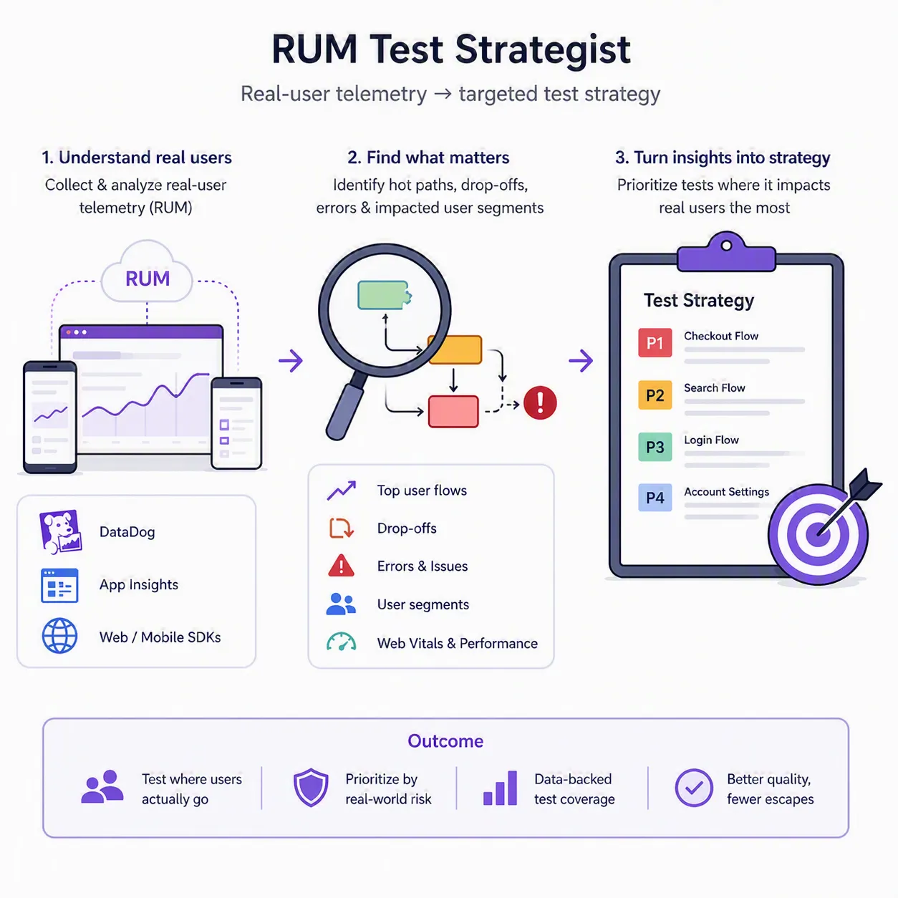
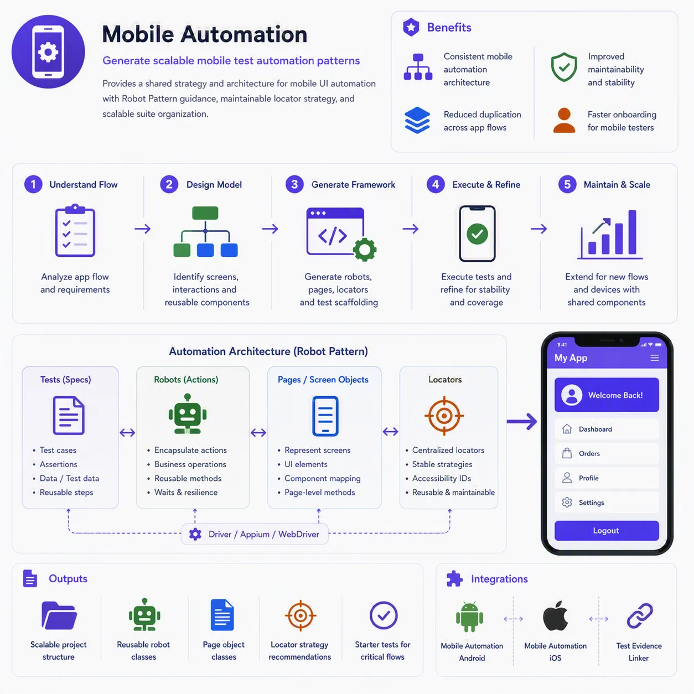

Open source · MIT · By Anitesh Shaw
QIS-Skills: senior QE judgment, installed into your editor.
19 GitHub Copilot Agent Skills that bring story analysis, test design, automation architecture, accessibility, triage, and RCA directly into VS Code Chat — the open-source distillation of QIS (QA Intelligence System), the enterprise agentic AI workflow that cut QA analysis and design effort 60–70%.
One ecosystem, an end-to-end quality pipeline
Six core skills chain from backlog to bug report — each one's output is the next one's input. Specialist and utility skills plug in where needed.

All 19 skills, documented
Each skill is a self-contained folder with a SKILL.md manifest. Expand any skill for what it does, what it needs, and what it produces.
Core QE workflow — the six-skill pipeline
qis-story-readinessEvaluates backlog items before sprint planning
Acts as a senior BA/QA lead: fetches the work item, auto-traverses the parent epic and sibling stories, checks regression memory for existing tests, scans the codebase for impacted validation rules, and only asks questions it genuinely can't answer itself. Ensures every story is testable, implementable, and estimable before it enters a sprint.
Inputs
- Work item ID (story, bug, spike, or enhancement)
- Access to the tracker (e.g., Azure DevOps) and codebase
Outputs
- Structured readiness summary with impact rating
- Dependency map and requirement-gap questions
- AC validation and story-point guidance with confidence level
qis-testcase-authorManual test cases and traceability from requirements
Turns a refined story into a complete manual test package. Checks regression memory and unit-test coverage first so it never duplicates existing coverage, analyzes linked pull requests, consults naming standards, and generates positive, negative, and edge-case scenarios ready for review and upload.
Inputs
- Work item ID with acceptance criteria
- Optional: linked PRs, existing regression suites
Outputs
- Comprehensive manual test cases (positive/negative/edge)
- Test workbooks and coverage documentation
- Traceability matrix mapping ACs to test cases
qis-e2e-automation-architectRequirements → executable Playwright suites
Transforms requirements into production-grade Playwright automation. Mandatory discipline built in: verifies unit-test coverage, queries the tracker for existing tests, discovers real locators from the codebase (never invents selectors), and inventories existing page objects before writing new ones.
Inputs
- Requirements or story with ACs
- Application codebase (for locator discovery)
Outputs
- Playwright test suites with Page Object Models
- Fixtures, test data setup, and a test plan
- CI/CD pipeline configuration
qis-pr-quality-gateNo-fluff reviewer for test-automation PRs
Reviews UI/API test-automation pull requests against six gates: assertion honesty, determinism/flake risk, test-data realism, traceability, AC-to-assertion coverage, and scope/secret hygiene. Asks for human approval before posting anything to the PR.
Inputs
- A test-automation pull request
- Optional: linked story for coverage checking
Outputs
- Gate-by-gate verdict (blocking vs. advisory)
- Inline review comments (posted only after approval)
- Actionable fix list, no style nitpicks
qis-test-evidence-linkerCloses the loop between automation and the tracker
Runs Playwright tests, captures videos and screenshots, uploads artifacts to the tracker, sets Associated Automation fields on manual test cases, posts result comments to the user story, and files structured bugs automatically when tests fail — full evidence chain, no manual bookkeeping.
Inputs
- Playwright test files or a test run
- Manual test case and story IDs to link
Outputs
- Artifacts (video/screenshots) attached to work items
- Automation linked to manual TCs; result comments on stories
- Auto-filed bugs with evidence on failure
qis-defect-triageStructured, classified, evidence-backed defect filing
Classifies every issue through a decision tree (in-sprint bug vs. post-sprint defect vs. production issue), gathers evidence, writes reproducible steps, assigns severity, and files a complete work item with traceability links — a 10-step runbook a junior engineer could follow.
Inputs
- Failure description, logs, or failing test evidence
- Tracker project/area context
Outputs
- Correctly classified work item (bug/defect/prod issue)
- Repro steps, severity triage, environment details
- Evidence attachments and traceability links
Specialist skills
qis-accessibility-guardianWCAG / Section 508 audits and conformance reports
Runs automated accessibility audits mapped to the DHS Trusted Tester v5.1 process — the same discipline behind a certified Trusted Tester's manual review. Performs static analysis on HTML/JSX/TSX and produces VPAT-style conformance reporting.
Inputs
- A URL, page, or HTML/JSX/TSX source
- Target conformance level (A/AA/AAA, Section 508)
Outputs
- WCAG/508 audit report mapped to Trusted Tester tests
- VPAT-style conformance report
- Prioritized, code-level fix recommendations

qis-api-acceptance-architect.NET MSTest API acceptance suites with standard patterns
Creates or refactors .NET API acceptance-test suites with a standardized scenario contract per endpoint: success, negative, and security cases. Includes mandatory pre-flight checks, a dev-coverage gap callout, and test-data feasibility handling.
Inputs
- API endpoints or OpenAPI spec
- .NET solution (new or existing test project)
Outputs
- MSTest acceptance suite (success/negative/security per endpoint)
- Standard project structure with async client
- Coverage gap report vs. dev-owned tests
qis-api-test-modernizerLegacy .NET API test projects → modern architecture
Migrates legacy .NET API acceptance-test projects to a modern architecture — latest target framework, async client, cleaner dependencies — through a gated process: intake conversation, feasibility gate, runtime readiness gate, then stepwise upgrade with parity verification.
Inputs
- Legacy .NET API test project/solution
- Access to run the suite (for before/after parity)
Outputs
- Modernized project on the latest target framework
- Async HTTP client and cleaned dependency graph
- Parity report proving equivalent coverage

qis-load-test-architectLoad/stress/soak scripts from OpenAPI specs
Builds API load-test scripts (Blazemeter Taurus / BZT) from an OpenAPI spec automatically, from manual endpoint collection, or hybrid. Handles environment/load configuration, test-data strategy, parameterization, and response chaining, with pre-execution validation before anything runs.
Inputs
- OpenAPI/Swagger spec, or manually collected endpoints
- Load profile (users, ramp, duration) and environment
Outputs
- Taurus/BZT scripts with parameterization and chaining
- Load/stress/soak profiles ready to execute
- Pre-execution validation checklist

qis-rum-test-strategistProduction RUM data → data-driven test strategy
Turns real-user-monitoring behavior into test strategy: discovers what users actually do in production, formulates coverage priorities from real traffic, defines KPI gates on Web Vitals and mobile metrics, and generates the test cases to enforce them.
Inputs
- RUM data source (e.g., Datadog RUM)
- Target platform (web / mobile)
Outputs
- Data-driven test strategy from real user flows
- KPI gates on Core Web Vitals / mobile KPIs
- Generated test cases and a coverage report

qis-incident-rca-bridgeIncident → root-cause analysis → tracker work item
Fetches an incident, analyzes it, and performs structured root-cause analysis using 5-Whys, Ishikawa (fishbone), and timeline reconstruction — then creates a detailed tracker work item with full traceability back to the incident.
Inputs
- Incident ID or ticket reference
- Access to incident tooling and the tracker
Outputs
- RCA document (5-Whys, Ishikawa, timeline)
- Detailed tracker work item with the analysis
- Traceability links incident ↔ work item
qis-legacy-parity-analystLegacy-vs-modern gap analysis for re-platforming
For modernization efforts: auto-discovers behavior in both legacy and modern codebases, performs deep story analysis, produces a legacy-vs-modern gap analysis with risk and impact assessment, and hands QA a test strategy focused on the riskiest parity gaps.
Inputs
- Legacy and modern codebases (or story context)
- The re-platforming story/work item
Outputs
- Parity/gap analysis with risk ratings
- QA test strategy for the modernized system
- Traceability mapping and recommendations
qis-mobile-automationShared mobile automation patterns (Robot + POM)
The shared foundation for the platform-specific mobile skills: Robot Pattern + Page Object Model conventions, locator discovery discipline (never assume — always discover from the codebase), and framework file inventory so generated tests match your existing structure.
Inputs
- Mobile app repository (Android or iOS)
Outputs
- Locators discovered from real code
- Page objects and robots matching your conventions
- Test classes wired into the existing framework

qis-android-automationAndroid UI tests in Kotlin (Compose / AndroidJUnit4)
Generates Android UI tests using Jetpack Compose UI Test and AndroidJUnit4 with Robot Pattern + POM. Discovers TestTags from the actual codebase, inventories existing framework files first, and validates output against naming standards before presenting.
Inputs
- Android project (Kotlin, Jetpack Compose)
- Scenario or story to automate
Outputs
- Kotlin UI test classes (Compose UI Test / AndroidJUnit4)
- Robots and page objects from discovered TestTags
qis-ios-automationiOS UI tests in Swift (XCUITest / XCTest)
Generates iOS UI tests in Swift using XCUITest/XCTest with Robot Pattern + POM. Discovers accessibility identifiers from the real codebase and reviews generated tests against the shared mobile standards before presenting them.
Inputs
- iOS project (Swift)
- Scenario or story to automate
Outputs
- Swift XCUITest test classes
- Robots and page objects from discovered identifiers
Engineering utilities
qis-plan-interrogatorRelentless plan interrogation until shared understanding
Interviews you about a plan or design the way a sharp architect would — resolving each branch of the decision tree, surfacing unstated assumptions, and refusing to stop at vague answers until genuine shared understanding is reached.
Inputs
- A plan, design doc, or even a rough idea
Outputs
- Resolved decision tree with rationale
- Surfaced assumptions and open risks
- A plan you can actually defend
qis-diagram-forgeStyled, animated Mermaid diagrams of any kind
Creates, styles, and animates Mermaid diagrams — flowchart, sequence, state, class, ER, gitGraph, timeline, mindmap, C4, and more — with consistent styling standards, as standalone .mmd files or embedded Markdown blocks.
Inputs
- A description of the process, system, or flow
Outputs
- Publication-quality Mermaid diagrams
.mmdfiles or Markdown-embedded blocks
qis-ui-craftsmanProduction-grade, accessible frontend interfaces
Builds distinctive, enterprise-grade frontend interfaces — components, pages, dashboards, React apps — with WCAG 2.1/2.2 and Section 508 accessibility built in from the first line, not bolted on after.
Inputs
- UI requirement, design intent, or mockup
Outputs
- Accessible, production-ready components and pages
- Enterprise design patterns applied consistently
Install in under a minute
Skills live in your Copilot skills directory. Clone, copy, restart VS Code — done.
Windows instructions, verification steps, and customization guidance are in the repository README.